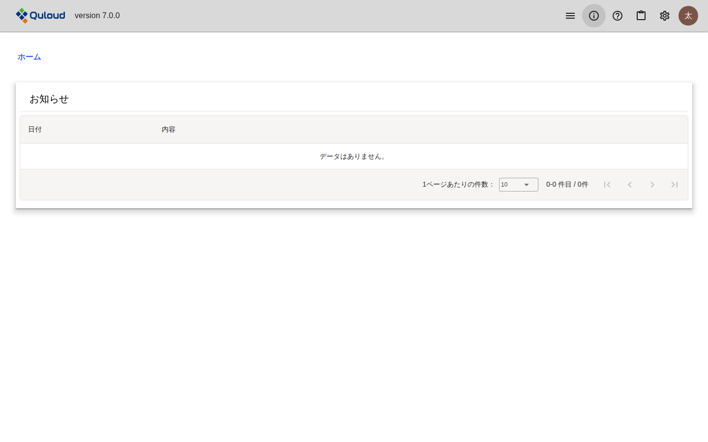
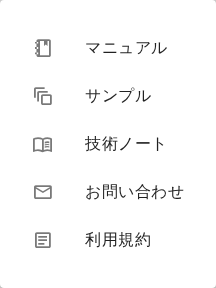
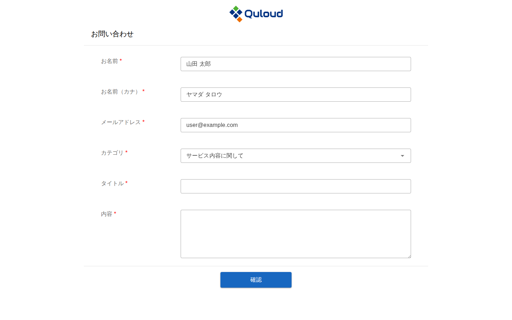
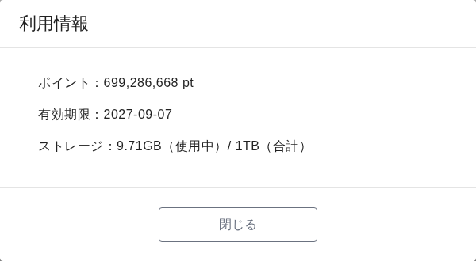
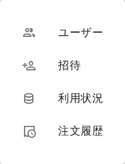
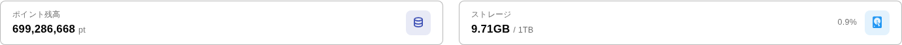
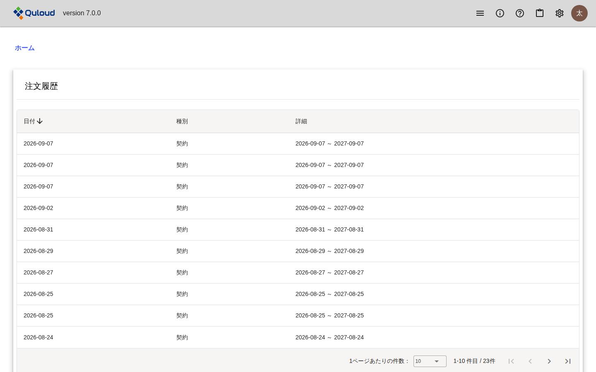
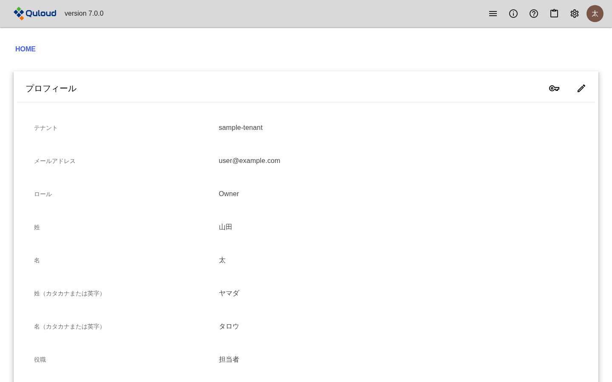

14. ヘッダーメニュー
注釈
本章は Quloud Ver.7.0 を対象としています。記載内容の確認日は 2026 年 9 月 8 日です。
14.1. 概要
画面の上端は全画面で共通です。左端のロゴを押すとホーム画面に戻ります。 右端には 6 つのアイコンが並びます。
図 14.1 ヘッダー
アイコン |
名前 |
内容 |
|---|---|---|
横三本線 |
メニュー |
ホーム画面の各タブへ直接移動します。 |
丸に |
お知らせ |
運営からのお知らせを表示します。未読があるとバッジが付きます。 |
丸に |
ヘルプ |
マニュアル・サンプル・技術ノート・お問い合わせ・利用規約 |
ボード |
利用情報 |
ポイント残高・有効期限・ストレージ使用量 |
歯車 |
設定 |
ユーザー・招待・利用状況・注文履歴 |
アバター |
アカウント |
プロフィール・サインアウト |
14.2. メニュー
横三本線のアイコンから、ホーム画面の「プロジェクト」「マテリアル」「ジョブ」 「プロパティ」の各タブへ直接移動できます（ホーム画面 の章）。
14.3. お知らせ
丸に i のアイコンを押すと、運営からのお知らせの一覧が開きます。
未読のお知らせがあると、アイコンに件数のバッジが付きます。

図 14.2 お知らせ
重要なお知らせは、ホーム画面を開いたときにダイアログでも表示されます。
14.4. ヘルプ
丸に ? のアイコンを押すと、次の項目が並びます。

図 14.3 ヘルプのメニュー
項目 |
内容 |
|---|---|
マニュアル |
本書を別のタブで開きます。 |
サンプル |
計算例を集めたサイトを別のタブで開きます。 |
技術ノート |
技術的な解説を集めたサイトを別のタブで開きます。 |
お問い合わせ |
問い合わせフォームを別のタブで開きます。 |
利用規約 |
利用規約の PDF を別のタブで開きます。 |
14.4.1. お問い合わせ

図 14.4 お問い合わせフォーム
お名前・メールアドレスにはサインイン中のユーザーの情報が入ります。 カテゴリを選び、タイトルと内容を入力して「確認」を押します。 確認画面で内容を見直してから送信します。送信すると、入力した内容が メールでも届きます。
14.5. 利用情報
ボードのアイコンを押すと、テナントの利用状況の要約が表示されます。

図 14.5 「利用情報」ダイアログ
ポイント — テナントに残っているポイントです。0 以下になると赤く表示され、 Job を実行できなくなります（計算 Job の実行 の章）
有効期限 — 契約の終了日です
ストレージ — 使用中の容量と上限です
14.6. 設定
歯車のアイコンを押すと、テナントの管理に関する項目が並びます。

図 14.6 設定のメニュー
項目 |
内容 |
|---|---|
ユーザー |
テナントに所属するユーザーの一覧です（新規ユーザーの招待 の章）。 |
招待 |
新しいユーザーを招待します（新規ユーザーの招待 の章）。 |
利用状況 |
ポイントとストレージの使用状況です。 |
注文履歴 |
契約とポイント購入の履歴です。管理ユーザー（Owner）にだけ表示されます。 |
14.6.1. 利用状況

図 14.7 利用状況（ポイント残高とストレージ）
上部にポイント残高とストレージの使用量が並び、その下が「ポイント」と 「ストレージ」の 2 つのタブに分かれます。
ポイントのタブには、ポイントの増減の履歴が日時の新しい順に並びます。 「ユーザー」と「種別」で絞り込めます。
種別 |
内容 |
|---|---|
契約付与 |
契約により付与されたポイントです。 |
購入 |
追加で購入したポイントです。 |
繰越 |
前の契約期間から繰り越されたポイントです。 |
補填・手動調整 |
運営による調整です。 |
ジョブ使用 |
Job の実行で消費したポイントです。ジョブ名から Job に移動できます。 |
失効 |
有効期限を過ぎて失効したポイントです。 |
トライアル終了 |
トライアル終了に伴う調整です。 |
ストレージのタブには、Material・Job ごとの使用容量と最終利用日時が並びます。
14.6.2. 注文履歴

図 14.8 注文履歴
契約とポイント購入の履歴です。管理ユーザー（Owner）にだけ表示されます。
14.7. アカウント
右端のアバターを押すと、「プロフィール」と「サインアウト」が並びます。 サインアウトについては サインイン・サインアウト の章をご参照ください。
14.7.1. プロフィール

図 14.9 プロフィール
サインイン中のユーザーの情報です。右上のアイコンから変更できます。
アイコン |
動作 |
|---|---|
鉛筆 |
姓・名・カナ・役職・表示言語を変更します。 |
鍵 |
パスワードを変更します。 |
テナント・メールアドレス・ロールは変更できません。 変更が必要な場合は 管理ユーザー（Owner）または運営にお問い合わせください。
表示言語は「日本語」と「英語」から選べます。
14.8. 注意事項
「注文履歴」は管理ユーザー（Owner）にだけ表示されます。メンバーの画面には 項目自体が現れません。
ポイント残高が 0 以下、ストレージが上限超過、契約期間外のいずれかに 当てはまると、画面上部に警告が表示され、プロジェクト・マテリアル・ジョブの 作成と実行ができなくなります（計算 Job の実行 の章）。